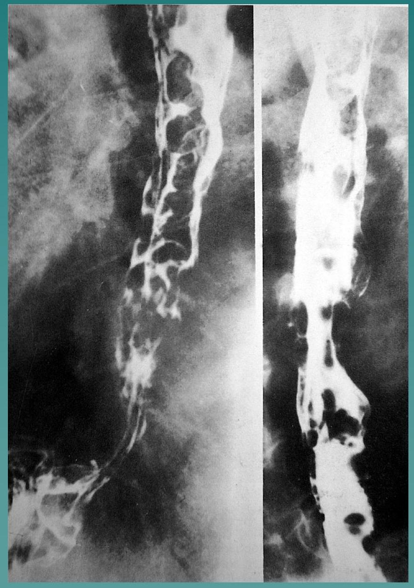

Diagnostic Imaging Overview
Level 3
Dr. M.N. Wambugu
Senior Lecturer Department of Diagnostic Radiology
1. Conventional X-Rays (Plain X-Rays)
There are 5 principle densities recognised on plain Xrays:
- air/gas = black (e.g. lung, bowel, stomach)
- fat = dark grey (e.g. subcutaneous tissue layer, retroperitoneal fat)
- soft tissues/water = light grey (e.g. solid organs, heart ,muscle, bladder)
- bone = off white
- contrast material/metal = bright white
Factors Contributing to Film Quality Include:
- obesity.
- movement.
- magnification
- scatter
Plain Films are Particularly Useful For:
- Chest
- Abdomen
- Trauma
- Skeletal diseases
2. Conventional Tomograms
- They are useful when an object is obscured by overlying structures e.g. during an intravenous pyelogram when the kidneys are obscured by bowel gas.
- The X-ray tube & film move in opposite directions blurring out structures not at the level of interest while structures in the plane of interest are seen in sharper outline.
- The pivot height is set according to the depth of the lesion within the patient.
3. Fluoroscopy
- is real time radiography.
- allows continuous viewing of an X-ray image allowing live visualisation of dynamic events.
- A continuous low power X-ray beam is passed through the patient.
- Fluoroscopy is used for many radiological procedures. E.g. barium studies, arteriograms, myelograms and interventional techniques.
Barium Meal

Barium Swallow Esophageal Varices
B) COMPUTED TOMOGRAPHY - CT SCAN
- Uses X-rays to produce cross sectional image.
- The information is stored in a digital format which is displayed as an image.
- The use of computer analysis gives a much greater array of densities than on conventional X-ray films.
- This allows differentiation of solid organs from each other & from pathological processes such as tumour or fluid collections.
- It makes CT extremely sensitive to the presence of minute amounts of calcium or contrast material.
Main Applications for Computed Tomography
Head
- trauma
- tumours
- stroke
- complications of HIV
- brain abscess
Chest
- mediastinal disease
- tumour staging prior to surgery
- diffuse lung disease using high resolution techniques
- pleural disease
- detection of early metastatic disease
- aortic aneurysm
Abdomen:
- liver lesions
- pancreas, tumour, pancreatitis
- trauma
- tumour staging
- retroperitoneum
- undiagnosed abdominal masses
- to identify an infective focus in PUO
Spine:
- Vertebral fractures
- disc prolapse
- infection
- tumour
Musculo-Skeletal
- calcaneal fractures
- recurrent dislocation shoulder - CT arthrography
- fractures pelvis/acetabulum
- Fractures- tibial plateau
- soft tissue tumours
Its important to note that:-
- 1 head CT scan gives a dose equivalent to 115 CXRs
- 1 chest CT scan gives a dose equivalent to 400 CXRs
- 1 abdominal CT gives a dose equivalent to 500CXRs
ALARA Principle - As Low As Reasonably Achievable
Due to the risks of radiation; its important that:-
- each exposure is justified on a case-by-case basis
- minimise number of X-rays taken
- minimise fluoroscopy screening time
- focus beam accurately to area of interest
- only trained personnel should operate equipment
- minimise use of mobile equipment
- use ultrasound whenever possible
- use restraining devices in children to prevent repeats.
- gonadal shield protection
- only necessary people should be present in a room where X-ray procedures are being performed
- staff should wear lead aprons
- at no time should anyone other than the patient be irradiated directly by the primary beam
- all X-ray rooms should have lead lining in their walls, ceilings & floors
ULTRASOUND
- Ultrasound uses high frequency sound waves to produce cross sectional body images.
- The basic component of the ultrasound probe (transducer) is the piezoelectric crystal which produces the sound waves when stimulated by an electric current.( piezo-electric effect)
- The sound waves are transmitted into the area of interest and are reflected back (echo) to the transducer which converts them back to electric signals.( reverse piezo-electric effect)
- Using computer analyses these electric signals form a cross-sectional image.
Different body tissues produce different degrees of sound wave reflection .
- A tissue of high echogenicity reflects more sound and appears bright on ultrasound- hyperechoeic
- A tissue of lower echogenicity is said to be hypoechoeic and will appear dark on ultrasound.
- Pure fluid reflects no sound at all and is said to be anechoeic, being seen as black.
- acoustic enhancement- cysts, fluid -filled structures
- acoustic shadowing- bone, gallstones, renal stones, calcifications, some breast tumors
Ultrasound is now being used in a wide variety of ways in addition to scans performed through the skin.surface:
- Trans vaginal scanning
- rectal scanning for:
- trans-esophageal scanning - especially for small heart defects
- intraluminal scanning for staging tumours of the gastrointestinal tract and esophagus
- intravascular scanning
- per operative scanning
Main Indications for Ultrasound Examination:
- Pregnancy - monitor pregnancy and diagnose complications
- Uterine and ovarian lesions
- Diseases of the liver, spleen and pancreas
- Abdominal masses
- Confirm pleural effusion and pleural mass
- Gallbladder disease
- Primary imaging of the urinary tract
- Testicular tumours
- Neck masses
- Soft tissue lesions
- Suspected brain abnormality in neonates.
Doppler Ultrasound
- Uses the Doppler Effect to image moving structures in the body.
- Blood flow velocities can be measured and with colour doppler the vessels highlighted in colour.
Doppler ultrasound is used for:
- imaging the peripheral veins to look for deep vein thrombosis
- imaging peripheral arteries to assess strictures & occlusions
- Imaging carotids arteries for atheroma in transient ischaemic attacks.
- cardiac scanning
- imaging the abdominal vessels, portal & hepatic veins, superior mesenteric artery and renal vessels
- blood supply of masses for characterisation
- velocity measurement of intracranial vessels in sickle cell disease
Advantages of Ultrasound
- relative low cost of equipment
- readily available
- lack of ionising radiation - safe
- very portable
- scan in any plane
- aids biopsy and drainage procedures
Disadvantages:
- cannot penetrate bone or gas, therefore limited
- very operator dependent
- Ready availability may be a drawback because people with insufficient experience are scanning in countries where there is no registration qualification. This leads to errors in diagnosis.
- obesity degrades the images due to scatter
NUCLEAR MEDICINE - SCINTIGRAPHY
- Scintigraphy refers to the use of gamma radiation to produce images.
- In order to obtain images a radio-pharmaceutical must be injected into the body.
- The radiopharmaceutical consists of a radio-isotope bound to a pharmaceutical compound.
- The one most commonly used radio-isotope is technetium, written 99 mTc
- The pharmaceutical depends on the part of body being imaged e.g. sulphur colloid is used in liver & spleen, phophonates in bone
- The gamma rays are detected by a gamma camera,
- The absorbed energy of the radiation is converted into an electric signal which is analysed by a computer and displayed as an image.
- Areas of increased uptake are referred to as "hot spots".
- Areas of low uptake are referred to as photon deficient or "cold" areas.
Uses & Advantages
- it is highly sensitive to early bone changes in osteomyelitis and metastases.
- functional as well as anatomic detail is obtained e.g. dynamic and static renal scans
- widely used in the diagnosis of pulmonary emboli (VQ scan)
- used as a screening test for reversible myocardial ischaemia prior to angiography (thallium scan)
- used in urinary tract infection in children to detect renal scarring secondary to ureteric reflux
Disadvantages:
- non specific
- Uses ionising radiation which is potentially harmful. One lung perfusion scan is equivalent to 50 chest X-rays
- high cost of equipment
- sodium iodide crystal in the gamma camera is sensitive to temperature changes and needs to be kept at a constant heat
- extra care needed in handling and disposing of radioactive materials
- radioactive isotopes are not readily available and may be difficult or impossible to obtain in some countries
MAGNETIC RESONANCE IMAGING - MRI SCAN
- Produces images of the body by utilising the magnetic properties of hydrogen in water molecules.
- A strong magnet is used to align these hydrogen atoms
- The hydrogen atoms align in a direction either parallel or anti-parallel to the strong external magnetic field
- Though aligned in a strong magnetic field the hydrogen nuclei do not lie motionless but each nucleus spins around the line of the field in a motion know as precession.
- The frequency of precession is an inherent property of the hydrogen atom in a given magnetic field and is known as the Larmor frequency.
- The Larmor frequency changes in proportion to magnetic field strength and is around 10 MHz
- A second magnetic field is now applied at right angles to the original magnetic field at the same frequency as the Larmor frequency and is known as the radiofrequency pulse (RF pulse).
- The RF pulse deflects the nuclei through an angle of ninety degrees (resonance) and brings the precessing protons into phase with each other, i.e. their spins are now in synchrony.
- As the protons spin in phase a current is produced in a receiver coil placed in the transverse plane ( MR signal)
- Computer analysis of the MR signal is used to produce the image.
- T1 relaxation occurs when the nuclei gradually return to their earlier alignment with the external field once the RF pulse is removed.
- T2 relaxation occurs when the protons cease to spin in synchrony..
MR Imaging Properties Depend On:
- proton density
- chemical environment of the hydrogen atoms e.g. whether in free water or bound by fat
- flow e.g. in blood or cerebrospinal fluid
- magnetic susceptibility
- T1 relaxation time
- T2 relaxation time
The most common images produced are:
- T1 weighted: this gives excellent anatomical definition, though lower sensitivity to pathology
- T2 weighted: this is highly sensitive to the presence of pathology
- Fat appears bright on T1 (high signal), less bright on T2
- Water is dark on T1 (low signal) but bright on T2
- Most pathologic processes are associated with increased water content and are therefore dark on T1 and bright on T2.
USES & ADVANTAGES OF MRI:
The main advantages are:
- excellent soft tissue contrast
- lack of artefact from adjacent bones which occurs with computed tomography.- MRI is excellent for the posterior and pituitary fossae
- multiplanar capabilities
- lack of ionising radiation
It is the imaging modality of choice for most brain and spine disorders and is very useful in the assessment of musculo-skeletal disorders
LIMITATIONS & DISADVANTAGES
- Cost: it is very expensive to buy and to maintain
- MRI is contraindicated in patients with cardiac pacemakers and cochlear implants, foreign metal bodies especially in the eye
- Decreased sensitivity in detecting small amounts of calcification and small hemorrhages. CT is still the imaging of choice for subarachnoid haemorrhage (SAH) and acute head injury.
- Bony detail is not as good as CT but it is more sensitive in detecting infiltrative disorders of bone marrow
- Artefacts. Although free of bone artefacts other artefacts do occur
- Claustrophobia: some patients cannot stand to be enclosed in such a small space (the tunnel)
- Noise: the machine is very noisy and the patient needs to wear ear plugs
RADIOGRAPHY USING CONTRAST MEDIUM
2 main types of contrast available:
- barium - used in gastrointestinal imaging
-
Iodine based contrast which can be given intravenously or put into other body spaces. It can be: -
- Ionic
- Non ionic
Ionic contrast - cheaper and hyperosmolar hence has more reactions/ side-effects.
- Contra-indicated in myelograms
- Should be used with caution in small children, patients with renal failure, heart failure, diabetes and in patients with an allergic history
Non ionic contrast is generally safer producing less vomiting and flushing. Has low osmolarity and is safe if aspirated into the lungs.
- produces less pain on salpingography and should be used for intravenous pyelography in high risk groups of patients. It is considerably more expensive than ionic contrast
INTERVENTIONAL RADIOLOGICAL PROCEDURES
- BIOPSY
- DRAINAGE PROCEDURES:
-
VASCULAR THERAPIES:
- Angioplasty: dilatation of a stricture by inflation of a balloon attached to an angiographic catheter. A stent is usually left after stricture dilatation to keep the vessel patent
- Vascular Embolization;- usually transarterial, using a wide range of embolic materials.
- Percutancous Chemotherapy
- Percutaneous Thrombolysis
-
HEPATO-BILIARY INTERVENTION
- Percutaneous Biliary drainage:
- Gallstone removal:
- TIPS- transjugular intrahepatic portosystemic shunts- used in the management of portal hypertension
- Percutaneous Cholecystotomy:
-
GENITO-URINARY INTERVENTIONS:
- Nephrostomy